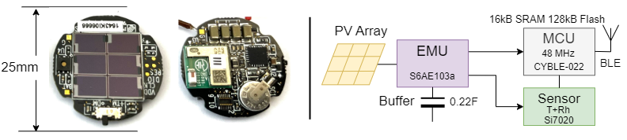
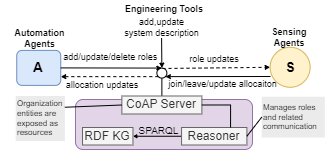

Looking for the description of the OSHES ontology? Its here
Rather look at an example model of it? There is one here
Imagine a having a battery-less energy-harvesting sensor like this one here which measures temperature and humidity and sends the values out as BLE advertisements:
It can be rather easily installed in factory workstations and office rooms with the help of nothing more than a double-sided tape. Since they are not that expensive anymore, you could even have several of these in the same space. Most probably, you wanted these for monitoring the environment, and further, to use them for feeding data to a program that controls the operation of an equipment (like like air-conditioner). But then the question comes - would it be in a position to send measurements when your software programs need it? To answer this, you need to look in to the datasheet of the sensor to understand how much energy it gathers (under some standard conditions) and how much does it need for its operation. Then you need to find out if the ambient in which you are placing this sensor will be able to supply it the amount of light it needs. Often, this is not easy to predict. Moreover, your software programs may not be needing the measurements all the time or may not be needing it in the same quality all the time. For example, the room air-conditioner needs to operate only during the day or only on demand.
Our approach to address this situation is through collaboration that is established through role definitions. For this to happen we need (1) an organization management, (2) a way to specify roles, and (3) a way to obtain, evaluate, and enact roles. We now describe the software implementation that addresses these three aspect.
We created a Java-based program that can be onboarded with the description of the group it manages and the description of the technical system that is available for agents in this group to use. The program has a CoAP interface through which groups can be created, updated, or deleted. The same interface can be used at run time to add roles to a group. The following diagram provides and overview of the program:
The ontology can be downloaded here
The schematic below attempts to explain the ontology visually: The central aspect of the ontology is the class SensingRole which is described using attributes obtained from existing (semantic) description of automation program (in particular, its inputs) and augmented with attributes that are relevant to energy-harvesting sensors. Our ontology also introduces DesignSpecification which can be considered to be the machine-understandable version of the sensor's datasheet.